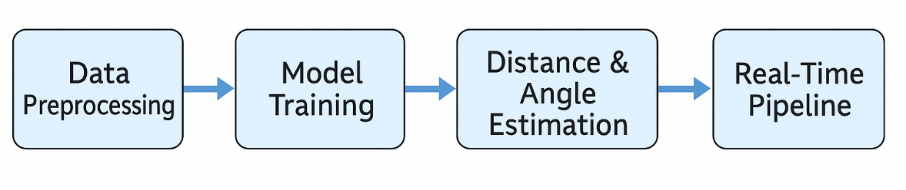

Introduction
This documentation outlines the development and functionality of an end-to-end machine learning pipeline for real-time distance estimation and human-robot interaction analysis. The system is designed to detect humans and robots in video frames, calculate spatial parameters such as distance and angle, and visualize risk levels to support autonomous decision-making in robotic systems.
Overview of the System Architecture
- The pipeline integrates multiple components to ensure robust and accurate estimation:
YOLOv8 Object Detection
Depth-based Distance Estimation or Focal Length Method
Angle Calculation from Bounding Box Shift
Multi-object Tracking (person ID management)
Safety Classification using Distance Thresholds
CSV Logging and Plotly-based Visualization
ROS Bag to Video Conversion for Frame Analysis
Each of these modules communicates in a modular yet tightly-coupled architecture to ensure scalability and maintainability.
{kind=link}

Figure - Modular System Architecture for Distance Estimation and Safety Zone Visualization
Detection and Spatial Estimation
- The object detection module uses YOLOv8 trained on a custom dataset containing the classes “person” and “robot”. Bounding box coordinates and dimensions are retrieved from each frame to calculate:
Distance using:
Focal length-based estimation (if depth is not available)
Angle based on the bounding box’s horizontal offset from the image center
Real-Time Safety Classification
- Each detected person is classified into one of three safety zones:
Green Zone: Safe distance
Yellow Zone: Cautionary proximity
Red Zone: Critical proximity requiring immediate attention
The classification logic helps provide a human-readable, color-coded view of risk levels for autonomous systems.
Tracking and Logging
- To avoid misidentifying individuals across frames, the system uses tracking logic to assign consistent IDs. This enables:
Temporal analysis per individual
Risk progression tracking over time
- All logs are written to a structured CSV file with:
Timestamp
Unique Person ID
Distance (in cm)
Angle (in degrees)
Risk Level (Color Code)
Visualization and Insights
- The CSV logs are converted into interactive Plotly graphs that allow:
Hover-based exploration of each point
Risk zone color overlays
Distance/angle smoothing using moving average
ROS Bag Integration
- A custom pipeline using Docker enables the conversion of ROS1 .bag files into image sequences and video. This is essential for:
Preprocessing large-scale autonomous robot datasets
Running real-time analysis on recorded footage
This step ensures full compatibility between robotics research environments and the vision pipeline.
All core modules are implemented using Python with key libraries including Ultralytics, OpenCV, NumPy, Pandas, and Plotly.
This documentation provides detailed insight into each module, including implementation strategies, design decisions, and example outputs.